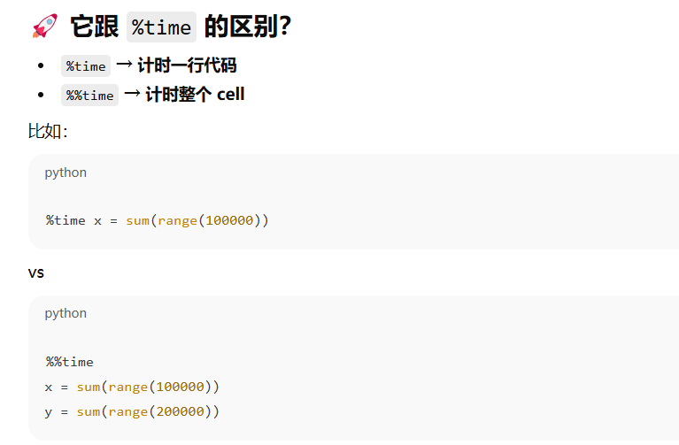

RAG
资料
视频
推荐，可速通基础上手https://www.bilibili.com/video/BV1ZDo5YWE7e
粗放，需要一定基础 https://www.bilibili.com/video/BV1ax4y1s7Sk
文档
https://github.com/QunBB/DeepLearning/tree/main/llms
书
推荐，llm开发必看《大模型应用开发 动手做AI Agent》
temperature 是 控制模型回答 “随机性 / 创造性” 的核心参数，范围通常是 0~2（实际常用 0~1）
简答：
这个@property和AIMessage(content=result)的作用是？
@property：把 invoke 方法伪装成属性，调用更简洁（不用加括号，或按属性语法使用），同时封装内部逻辑；
AIMessage(...)：将模型返回的纯文本，包装成 LangChain 标准消息对象，方便对接后续 LangChain 组件（如流程串联、RAG）。
Python@propertydef invoke(self,prompt,history=[]): if history is None: history=[] history.append( {'role':'user','content':prompt} ) response=self.client.chat.completions.create( model='glm-4.5-air', message=history ) result=response.choices[0].message.content return AIMessage(content=result)
GLM-4.5用流式输出会返回很多None，GLM-4就没有
上文的对话可以由history参数自行编辑，比如用来设置身份认知。
GLM只支持system user assistant 3种角色
Bash# 对话测试。也可以用_call()方法，是等价的llm.invoke( prompt="请讲一个笑话", history=[ {'role':"user", 'content':"你是一个地理学家"}, {'role':"assistant",'content':"好的，我接下来的回答都会和地理学有关"}, ] )
本地部署大模型，可以用LM Studio，GPU/CPU都可以。vLLM、API for Open LLMS都可以。
deepseek的temperature设置：
temperature 参数默认为 1.0。
我们建议您根据如下表格，按使用场景设置 temperature。
点击图片可查看完整电子表格
ERROR: Cannot install langchain-community==0.3.27, langchain-core==1.0.0, langchain-openai==1.0.0, langchain-text-splitters==1.0.0 and langchain==1.0.0 because these package versions have conflicting dependencies.
The conflict is caused by:
The user requested langchain-core==1.0.0
langchain 1.0.0 depends on langchain-core<2.0.0 and >=1.0.0
langchain-text-splitters 1.0.0 depends on langchain-core<2.0.0 and >=1.0.0
langchain-openai 1.0.0 depends on langchain-core<2.0.0 and >=1.0.0
langchain-community 0.3.27 depends on langchain-core<1.0.0 and >=0.3.66
对话大模型支持的角色：GLM：system user assistant 3种角色
Deepseek：system user assistant tool
用openai sdk有必要吗？看起来和直接调用deepseek等没有太多差别。就差了一个调用名字、base_url
Pythondef __init__(self,ds_api_key): super().__init__() self.client=OpenAI( api_key=ds_api_key, base_url="https://api.deepseek.com" )
Pythondef __init__(self,zhipuai_api_key): super().__init__() self.client=ZhipuAI( api_key=zhipuai_api_key )
提示词部分，用langchain构造示例选择器
为什么基于长度过滤，输出的是完整示例格式 “input：炎热，output：寒冷”
基于余弦相似度过滤，只输出了示例的输出部分“output：寒冷”，主要是我并没有显示地定义过回复什么，所有只输出了示例的后半部分这件事是模型自己的决策？如果我希望模型生成的回复也严格符合示例格式（即“input：炎热，output：寒冷”）应该怎么做呢？
答：测试了一下，多次执行发现输出的格式不一样，有的是仅输出有的是完整示例格式，甚至有错误格式，而且prompt模块运行一次，后面不论重复输入多少次，输出的格式都一样，这说明输出的逻辑在prompt模块部分就确定好了，和多次输入无关。输出的具体格式的确是模型自己决定的，所以可以在提示词中就人为加入引导“生成的回复必须和示例格式一致”。
示例选择器有长度、余弦相似度、ngram重叠度等
示例选择器的目的是选择与输入最相似的示例作为提示词，这样可以过滤大量示例中的噪声，提高提示词质量，从而提高生成回复的质量，而且还缩减了提示词输入规模。
向量存储检索有 FAISS ChromaDB等
Python# 构造余弦相似度的示例选择器selector，包含示例+示例模板example_selector=MaxMarginalRelevanceExampleSelector.from_examples( examples=examples, #传入示例 embeddings=embeddings, #嵌入模型 vectorstore_cls=FAISS, #vectorstore，向量存储器，也可以用ChromaDB k=2 #选择示例数量)
ChatPromptTemplate.from_template 构造文本模板，如'今天是{date}'
ChatPromptTemplate.from_messages 构造对话模板，内容是变量list，如[conversation,prompt……]
langchain给人的一种感觉是，把很多细分的功能都封装成了方法，但是太精细了，可以不用每一种都掌握，因为哪几种主要的方法完全可以组配成精细的功能，拿提示词模块来说，很多提示词复杂功能可以用简单的类，由用户自行设计，比如历史对话上下文做提示词、示例学习实现CoT，都可以自定义提示词来实现。但是example_selector挺有用的，虽然也可以用外部的方法来实现余弦相似度等示例筛选。
%%time 是个 魔法命令 (magic command)，用来测当前这个 cell 的执行时间。
它会输出两个东西：
CPU times（用户态 + 内核态消耗的 CPU 时间）
Wall time（真实世界的耗时，最重要）

4.缓存
相同的提问/任务 缓存起来 提高复用率 从而提高生产速度->用户体验、节约成本
下面的测试可见，差距是秒-毫秒级别的
OutputParser 输出解析器：
就是用来规范输出的格式。
其实完全不用调用langchain提供的众多格式解析器，可以自己在提示词里规定，或者写代码手动对输出的东西进行格式化就可以了
自定义解析器
自定义class和使用RunnableGenerator封装的区别：
RunnableGenerator适合多步骤作业，因为支持内部的流式作业解析，而自定义class是一次性返回解析结果。
较多情况下，在自定义的函数里加多个步骤确实够实现多步骤作业。
RunnableGenerator 的核心价值是：
实时流式输出（边处理边返回） 通过yield
中间状态暴露（让调用方知道进展）
更好的用户体验（不用干等着）
所以不是"必须用"，而是"在需要实时反馈时才用"。你的简单函数在90%的场景下都是更好的选择！🎯
ReAct Agent
尝试使用，发现很多问题：1.幻觉很严重，以用户信息问答业务为例，连输入的用户名字都会被打乱，比如问的是“小王的id”，输出的是“张三xxx”。用了一种gpt给出的繁琐且不太懂的方法，可以保障人名一致了，但是还是不能调用tools，导致中间的具体信息也是胡说八道。
2.不同的模型有差异，用deepseek能输出但瞎说，用glm和qwen就直接报错输入格式有问题了。。。
3.最致命的问题是 AgentExecutor被移除了。。大部分教程和ai都是用这个模块的（先create_agent，再接一个AgentExecutor最后invoke）就没问题。现在用不了，暂时不知道用什么方法平替，如果能平替了应该就可以，不然相当于仅仅create_agent然后直接invoke，就会有上面的问题
4.用了这个agent似乎放到chain里面也比较困难，不能和prompt或者parser接得很好，或许agent不需要放到chain里？